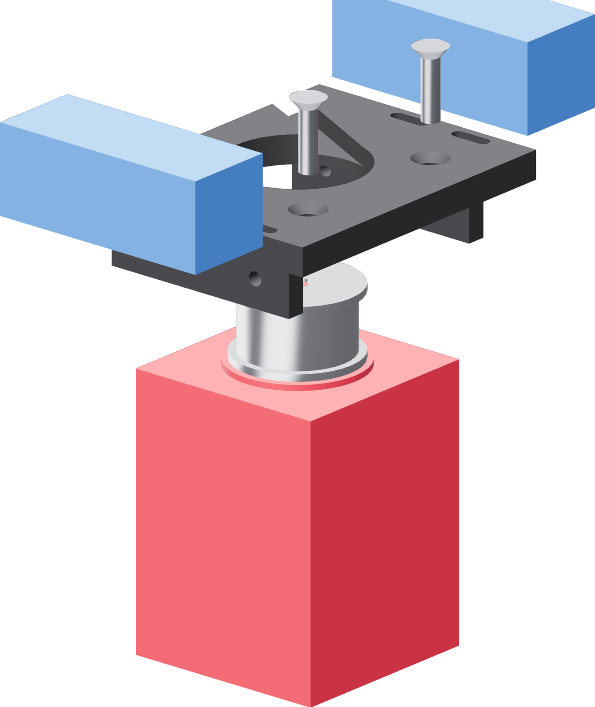

The motor on the carriage
On the bench, before either piece meets the tower. The motor hangs face-down and the carriage's 2 mm skin takes its face pilot.

- Stand the carriage skin-up on two blocks about 25 mm tall, arms bridging the gap between them.
- Lower the motor face-down. The pulley passes through the skin's Ø38.6 mm hole and the Ø38.1 mm pilot seats in it.
- Turn the motor until its rear pair of flange holes lines up with the two countersinks in the arms. The front pair stays empty — the belt's swept path crosses it at full tension.
- Pass an M5 × 20 countersunk screw up through each arm and through the motor's Ø5.2 mm flange hole.
- Drop an M5 square nut into the motor's open corner channel above each screw and engage it. The nut's flats sit on the channel's two walls and hold it.
- Pull both down evenly with the 3 mm hex. Seat them by the heads: each 9.8 mm head must sit flush inside its recess in the arm's underside.
The screw does not thread into the motor
The 23HS30-2804S's four flange holes are Ø5.2 mm clearance, not tapped. An M5 × 12 reaches past the 8 mm arm and ends 1 mm below the top of the 5 mm flange ear, where nothing can catch it. It needs the 20 mm screw and the square nut: 8 mm arm, 5 mm ear, 4 mm nut, 3 mm proud. Confirm the nut seats in the channel on the first assembly — that fit is recorded from the catalogue, not yet from this bench.